Torneado CNC — eje D57→M30×1,5, taladro D10
Tarea: Usando lenguaje de CN, desarrollar el programa CNC de la pieza descrita.
Pieza: Eje con Ø57, Ø50, Ø40, Ø25, Ø10, M30×1,5 y chaflanes 1,5×45°. Dimensiones de partida: D60 × L100 mm.
Herramientas:
- Torneado desbaste: vc=180 m/min; f=0,3 mm/rev
- Torneado acabado: vc=180 m/min; f=0,3 mm/rev
- Ranurado (b=2,2 mm): S=650 rpm; f=0,15 mm/rev
- Taladrado D10: vc=120 m/min; f=0,1 mm/rev
- Roscado M30×1,5
- Tronzado: S=300 rpm; Z=2; f=0,1 mm/rev
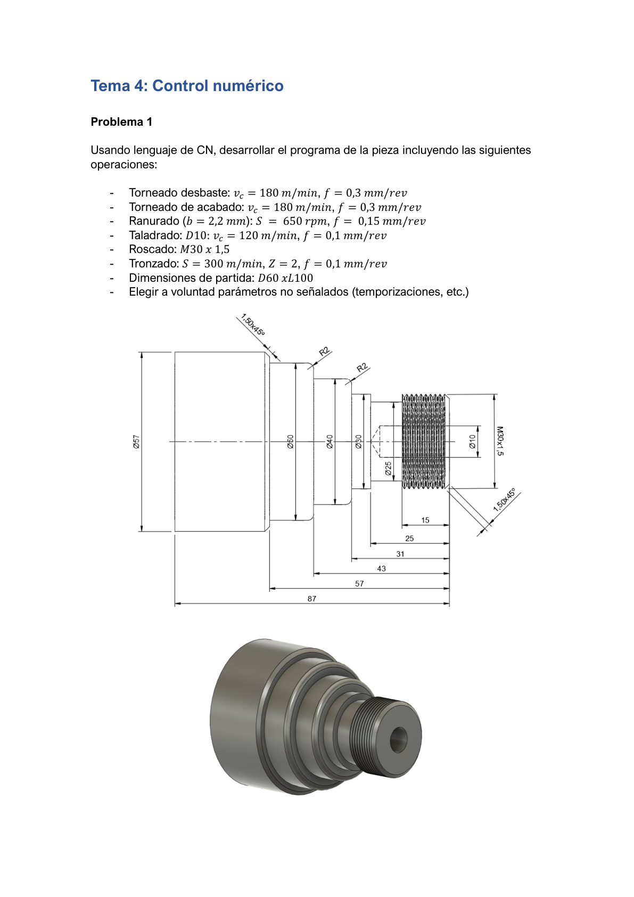
Programa CNC — Torneado eje (Fanuc 0i)
Parámetros de corte
Desbaste/Acabado: G96 S180 (CSS vc=180 m/min); F0,3 Ranurado: G97 S650; F0,15 Taladrado: G97 S3820 (vc=120→N=120000/(π×10)=3820 rpm); F0,1 Tronzado: G97 S300; F0,1 Roscado M30×1,5: G76 (paso=1,5 mm; fondo rosca ≈ Ø29,05 mm)Coordenadas Z negativas desde la cara frontal. Ajustar longitudes de tramos según el plano de la pieza.
O0001 (EJE D57 M30X1.5 - TORNEADO CNC) ; ; === T01 - DESBASTE (vc=180, f=0.3) === N10 G28 U0 W0 N20 T0101 N30 G96 S180 G54 M03 N40 G00 X62. Z2. ; Ciclo desbaste exterior G71: N50 G71 U1.5 R0.5 ; ap=1.5mm, retroceso=0.5mm N60 G71 P70 Q160 U0.4 W0.05 F0.3 ; perfil N70-N160 ; ; --- PERFIL DE ACABADO (referencia) --- N70 G00 X0 N80 G01 Z0 F0.15 ; cara frontal N90 X23.5 ; al diametro 25 (falta chaflan) N100 X25. Z-1.25 ; chaflan 1.5x45 N110 Z-LZ1 ; tramo D25 (cota Z del plano) N120 X28.5 Z-LZ1-1.5 ; chaflan a D30 N130 X30. ; diametro rosca M30 N140 Z-LZ2 ; tramo rosca N150 X38.5 Z-LZ2-1.5 ; chaflan a D40 N160 X40. ; hombro D40 N170 Z-LZ3 ; fin D40 ; (continuar perfil hasta D57 segun plano) ; ; === T02 - ACABADO === N200 T0202 N210 G96 S180 M03 N220 G70 P70 Q160 ; mismo perfil, sin sobremedida ; ; === T03 - TALADRADO D10 AXIAL === N300 T0303 N310 G97 S3820 M03 N320 G00 X0. Z5. N330 G83 Z-30. Q3. F0.1 ; taladrado profundo D10 (Q=3mm incremento) N340 G80 ; ; === T04 - RANURADO (b=2.2mm, S=650, f=0.15) === N400 T0404 N410 G97 S650 M03 N420 G00 X34. Z-LZran ; posicion ranura (salida rosca) N430 G01 X27. F0.15 ; bajar hasta fondo ranura (D27 < D30) N440 G04 P200 ; dwell 0.2s (plano de fondo) N450 G01 X34. F0.3 ; retroceso rapido ; ; === T05 - ROSCADO M30x1.5 === N500 T0505 N510 G97 S800 M03 ; vel. reducida estable N520 G00 X35. Z2. ; exterior rosca + clearance ; Ciclo de roscado G76 (dos llamadas): N530 G76 P020060 Q50 R0.05 ; 2 pasadas fin, ang.60, tolerancia N540 G76 X29.05 Z-LZros P975 Q400 F1.5 ; X=diametro fondo(M30-2*0.975), Z=fin rosca, P=prof.total, Q=primer pase, F=paso ; ; === T06 - TRONZADO (S=300, f=0.1) === N600 T0606 N610 G97 S300 M03 N620 G00 X62. Z-99. ; posicion tronzado (L total-1mm) N630 G01 X0. F0.1 ; tronzado hasta eje N640 G00 X80. Z100. N650 M05 M09 M30Fresado CNC — ranuras curvas 120×70×18 mm
Tarea: Usando lenguaje de CN, desarrollar el programa CNC de la pieza descrita.
Pieza: Placa con dos ranuras sinusoidales (R12,5/R18,5/R11,5). Planeado de 5 mm por una cara. Dimensiones de partida: 120 × 70 × 18 mm.
Herramientas:
- Fresa D8: vc=180 m/min; Z=2; fz=0,05 mm/Z/rev; L=45 mm
- Fresa D20: vc=100 m/min; Z=6; fz=0,1 mm/Z/rev; L=60 mm
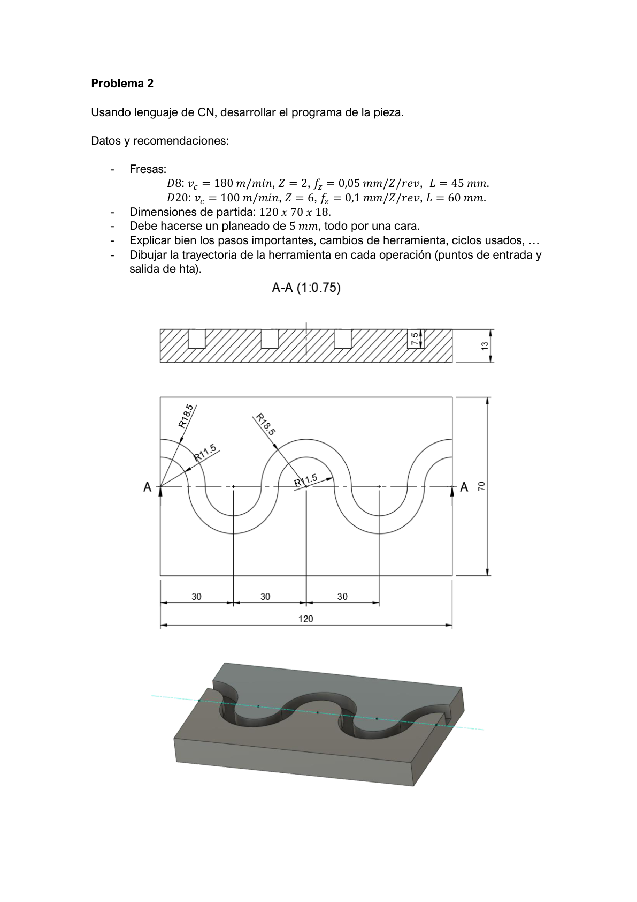
Programa CNC — Ranuras curvas (Fanuc 0i)
Parámetros de corte
Fresa D8 (ranuras): N = 180.000/(π×8) = 7.162 rpm; vf = 7162×2×0,05 = 716 mm/min Fresa D20 (planeado): N = 100.000/(π×20) = 1.592 rpm; vf = 1592×6×0,1 = 955 mm/minTécnica clave: interpolación circular G2/G3
Para una ranura con arcos de radio R, la sintaxis es:
G2 X_fin Y_fin R_radio F_avance ; arco horario (CW) G3 X_fin Y_fin R_radio F_avance ; arco antihor. (CCW) ; alternativa con I,J (incrementales desde inicio hasta centro): G2 X_fin Y_fin I_incX J_incY F_avance O0002 (RANURAS CURVAS 120x70x18) ; ; === T01 - PLANEADO (fresa D20) === T01 M06 G90 G54 G00 X-15. Y-45. G43 Z5. H01 G96 S1592 M03 M08 G01 Z0. F955 ; cara superior ; (recorrido planeado - pasadas paralelas cubriendod el ancho 120mm) G01 X135. F955 Y-15. G01 X-15. ; ... continuar hasta cubrir los 70mm G00 Z50. ; ; === T02 - RANURAS CURVAS (fresa D8) === ; (origen G54 en centro de la pieza, Z0 en cara superior planeada) T02 M06 G43 Z5. H02 G97 S7162 M03 ; ; --- RANURA 1 (arcos R12.5/R18.5/R11.5) --- ; Ajustar X,Y,I,J segun geometria del plano G00 X_inicio1 Y_inicio1 G01 Z-8. F100 ; penetracion a profundidad ranura G01 X... Y... F716 ; aproximacion lineal G02 X... Y... R12.5 F716 ; arco CW R12.5 G03 X... Y... R18.5 ; arco CCW R18.5 G02 X... Y... R11.5 ; arco CW R11.5 G01 Z5. F500 ; retirada ; ; --- RANURA 2 (simetrica o segun plano) --- G00 X_inicio2 Y_inicio2 G01 Z-8. F100 ; (repetir estructura de arcos) ; G00 Z100. M05 M09 M30Las coordenadas exactas de X/Y requieren calcular los centros de arco desde el plano de la pieza.
Fresado+taladrado — brida cuadrada Ø80 (100×100×35)
Tarea: Usando lenguaje de CN, desarrollar el programa CNC de la pieza descrita.
Pieza: Brida circular Ø80 sobre base cuadrada, con taladros Ø8,5 en PCD Ø60 y cajera cuadrada interior 40×R5. Solo taladrado (sin roscado ni avellanado superior). Dimensiones de partida: 100 × 100 × 35 mm.
Herramientas:
- Fresa D20: vc=150 m/min; Z=6; fz=0,2 mm/Z/rev; L=60 mm
- Fresa D8: vc=200 m/min; Z=3; fz=0,1 mm/Z/rev; L=40 mm
- Broca D8,5: vc=25 m/min; Z=2; f=0,1 mm/rev; L=60 mm
¿Cómo realizarías el avellanado/chaflán de 1,5×45°?
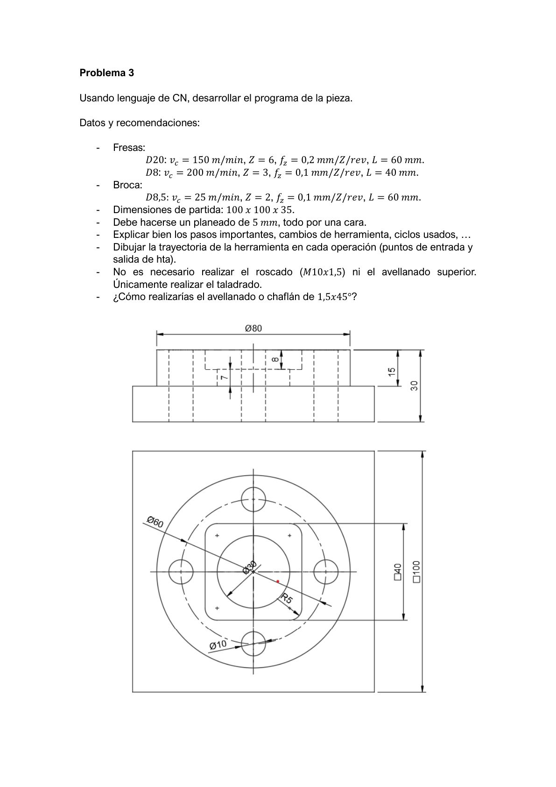
Programa CNC — Brida cuadrada Ø80 (Fanuc 0i)
Parámetros de corte
Fresa D20 (planeado/contorno): N = 150.000/(π×20) = 2.387 rpm; vf = 2387×6×0,2 = 2.864 mm/min Fresa D8 (cajera 40×R5): N = 200.000/(π×8) = 7.958 rpm; vf = 7958×3×0,1 = 2.387 mm/min Broca D8,5 (taladros PCD): N = 25.000/(π×8,5) = 936 rpm; vf = 936×0,1 = 93,6 mm/min O0003 (BRIDA CUADRADA 100x100x35 - FRESADO) ; G54: origen en centro superior de la pieza, Z0 en cara planeada ; ; === T01 - PLANEADO (fresa D20, ap=5mm) === T01 M06 (fresa D20) G90 G54 G00 X-60. Y0. G43 Z5. H01 G97 S2387 M03 M08 G01 Z-5. F200 ; primera pasada planeado G01 X60. F2864 G00 Z5. ; (mas pasadas paralelas si DPara el chaflán 1,5×45° en los taladros: usar avellanador (ángulo 90°) en un ciclo G82 o G81 a la profundidad adecuada. Profundidades Z exactas según cota del plano.
Fresado — brida circular D100, ranuras radiales
Tarea: Usando lenguaje de CN, desarrollar el programa CNC de la pieza descrita.
Pieza: Disco cilíndrico con ranuras radiales tipo T, 6 agujeros en PCD y cajera central Ø80/R30. Planeado de 5 mm. Dimensiones de partida: D100 × 25 mm.
Herramientas:
- Fresa D30: vc=150 m/min; Z=6; fz=0,2 mm/Z/rev; L=60 mm
- Fresa D8: vc=200 m/min; Z=3; fz=0,1 mm/Z/rev; L=40 mm
- Brocas: definir a conveniencia
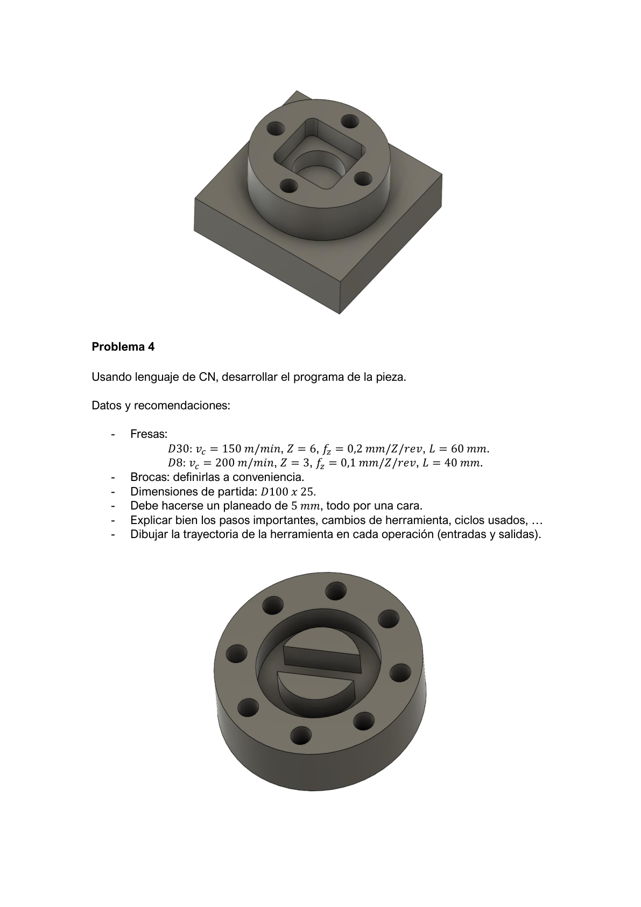
Parámetros de corte
Fresa D30 (planeado/cajera): N = 150.000/(π×30) = 1.592 rpm; vf = 1592×6×0,2 = 1.911 mm/min Fresa D8 (ranuras radiales): N = 200.000/(π×8) = 7.958 rpm; vf = 7958×3×0,1 = 2.387 mm/minTécnica: patrón angular de ranuras radiales
; Ranuras radiales en patron angular (ej. 6 ranuras c/60°) ; Usar G68 (rotacion de sistema de coordenadas) o calcular XY de cada ranura ; ; Opcion A: G68 (rotacion) G68 X0. Y0. R0. ; ranura 1 (0°) G00 X_inicio Y0. G01 Z-Zranura F_entry G01 X_fin Y0. F_corte G00 Z5. G68 X0. Y0. R60. ; ranura 2 (60°) ; ... repetir para 6 ranuras G69 ; cancelar rotacion ; ; Cajera circular central Ø80 con R30: usar G41/G42 + G02 G00 X0. Y-30. ; entrar en cajera G01 Z-Zcajera F100 G41 D01 G01 X0. Y-30. F1911 ; compensacion radio herramienta G02 I0. J30. ; circulo G40 G01 X0. Y0.Fresado — placa grande 160×160×55 mm
Tarea: Usando lenguaje de CN, desarrollar el programa CNC de la pieza descrita.
Pieza: Placa cuadrada con patrón circular de agujeros en varias PCDs (Ø100, Ø60, Ø8); cajeras y taladros de distintos diámetros. Planeado de 5 mm. Dimensiones de partida: 160 × 160 × 55 mm.
Herramientas:
- Fresa D20: vc=100 m/min; Z=6; fz=0,1 mm/Z/rev; L=60 mm
- Fresa D14: vc=180 m/min; Z=4; fz=0,05 mm/Z/rev; L=40 mm
- Broca D8: vc=25 m/min; Z=2; fz=0,05 mm/rev; L=70 mm
- Broca D12: vc=22 m/min; Z=2; fz=0,05 mm/rev; L=65 mm
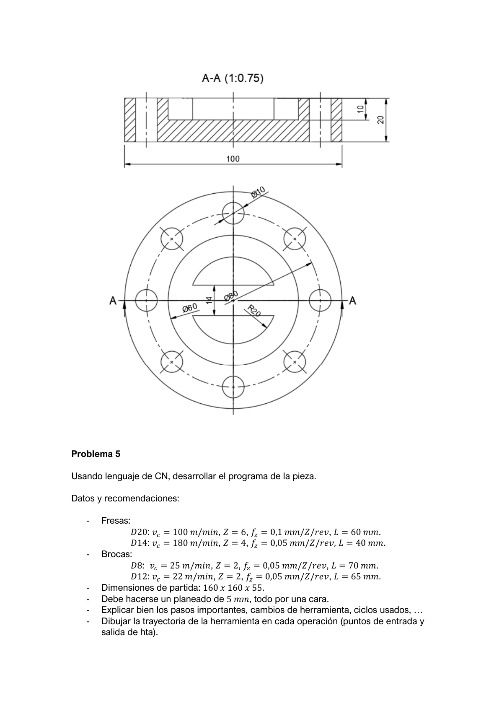
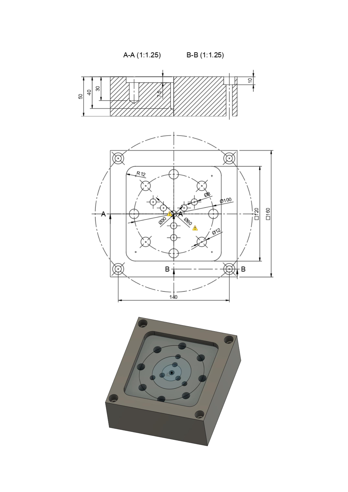
Parámetros de corte
Fresa D20 (planeado): N = 100.000/(π×20) = 1.592 rpm; vf = 1592×6×0,1 = 955 mm/min Fresa D14 (cajeras/PCDs): N = 180.000/(π×14) = 4.093 rpm; vf = 4093×4×0,05 = 819 mm/min Broca D8 (agujeros): N = 25.000/(π×8) = 995 rpm; vf = 995×0,05 = 49,8 mm/min Broca D12 (agujeros): N = 22.000/(π×12) = 584 rpm; vf = 584×0,05 = 29,2 mm/minTécnica: patrón circular de agujeros (G81 + G68 o coordenadas)
; PCD Ø100 (R=50) con N agujeros cada 360/N grados: ; Calcular cada posicion: X=R*cos(ang), Y=R*sin(ang) G81 R2. Z-Ztaladro F49.8 X50. Y0. ; 0° X25. Y43.3 ; 60° (50*cos60=25, 50*sin60=43.3) X-25. Y43.3 ; 120° X-50. Y0. ; 180° X-25. Y-43.3 ; 240° X25. Y-43.3 ; 300° G80 ; PCD Ø60 (R=30) similar con sus angulos propiosFresado — pieza con cruz y agujeros (65×65×25)
Tarea: Usando lenguaje de CN, desarrollar el programa CNC de la pieza descrita.
Pieza: Base cuadrada 65×65 con forma en cruz de brazos R15/R8, agujero central Ø12, y 4 agujeros Ø7 en esquinas. Planeado de 5 mm. Dimensiones de partida: 65 × 65 × 25 mm.
Herramientas:
- Fresa D25: vc=200 m/min; Z=6; fz=0,2 mm/Z/rev
- Fresa D6: vc=100 m/min; Z=3; fz=0,1 mm/Z/rev
- Broca D7: vc=30 m/min; Z=2; f=0,1 mm/rev
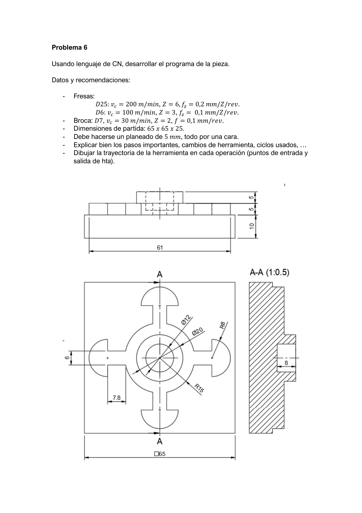
Parámetros de corte
Fresa D25 (planeado/contorno cruz): N = 200.000/(π×25) = 2.546 rpm; vf = 2546×6×0,2 = 3.056 mm/min Fresa D6 (contorno interior/ranura): N = 100.000/(π×6) = 5.305 rpm; vf = 5305×3×0,1 = 1.592 mm/min Broca D7 (4 agujeros esquinas): N = 30.000/(π×7) = 1.364 rpm; vf = 1364×0,1 = 136 mm/minTécnica: contorno en forma de cruz (alternar G1 y G2/G3 para radios de entalle)
; Cruz con brazos R15 (convexo exterior) y R8 (concavo interior) ; Perfil exterior en 4 brazos: cada brazo = G01 recto + G03 arco R8 en esquina ; Entrar al contorno tangencialmente G00 X... Y... ; punto de entrada exterior G01 Z-Zcontorno F100 G41 D_fresa G01 ... ; activar compensacion radio herramienta G01 X... Y... F1592 ; lado recto del brazo G03 X... Y... R8. ; esquina concava R8 G01 X... Y... ; siguiente recto ; ... (repetir 4 veces por simetria, usar G68 cada 90°) G40 G01 ... ; desactivar compensacion ; Agujero central Ø12: G81 X0 Y0 Z-Prof R2 F136 (broca D7 o cambiar a broca D12) ; Agujeros Ø7 en esquinas (x=±a, y=±a): G81 en 4 posicionesFresado — pieza mixta cajeras+slot (100×100×30)
Tarea: Usando lenguaje de CN, desarrollar el programa CNC de la pieza descrita.
Pieza: 4 cajeras circulares Ø25 en las esquinas, cajera rectangular central 30, agujero central Ø10 y chaflanes 4,5°. Planeado de 5 mm. Dimensiones de partida: 100 × 100 × 30 mm.
Herramientas:
- Fresa D25: vc=200 m/min; Z=6; fz=0,2 mm/Z/rev
- Fresa D10: vc=100 m/min; Z=3; fz=0,1 mm/Z/rev
- Fresa D4: vc=100 m/min; Z=2; fz=0,1 mm/Z/rev
- Broca D10: vc=30 m/min; Z=2; f=0,1 mm/rev
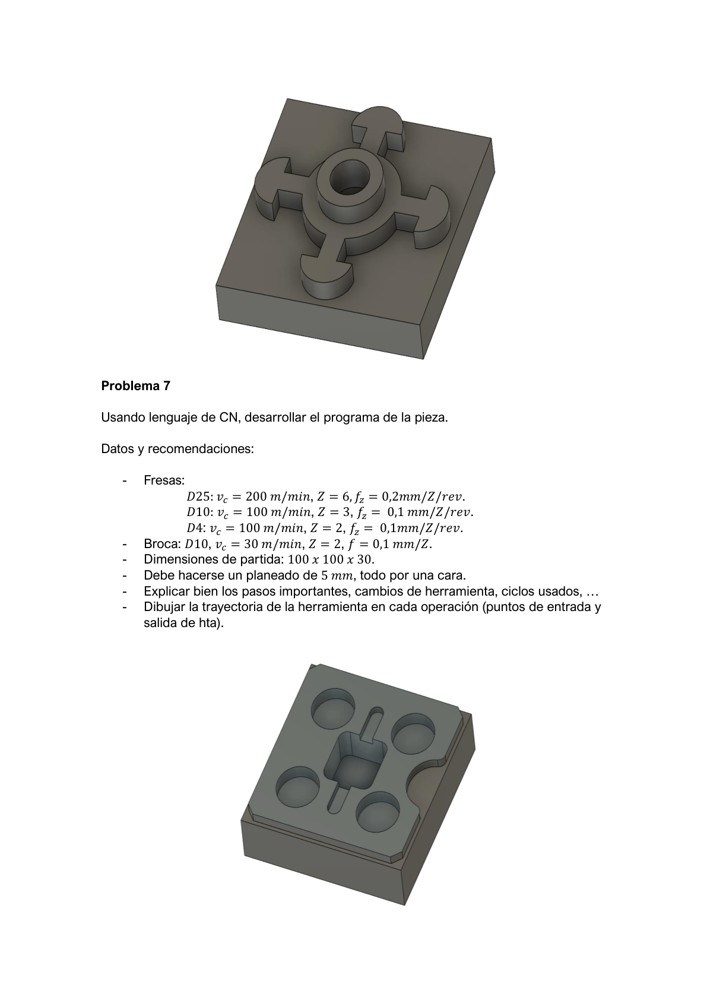
Parámetros de corte
Fresa D25 (cajeras Ø25 esquinas): N = 200.000/(π×25) = 2.546 rpm; vf = 2546×6×0,2 = 3.056 mm/min Fresa D10 (cajera central 30mm): N = 100.000/(π×10) = 3.183 rpm; vf = 3183×3×0,1 = 955 mm/min Fresa D4 (chaflanes 4,5°): N = 100.000/(π×4) = 7.958 rpm; vf = 7958×2×0,1 = 1.592 mm/min Broca D10 (agujero central): N = 30.000/(π×10) = 955 rpm; vf = 955×0,1 = 95,5 mm/minTécnica: cajeras circulares en esquinas (G2 full circle)
; Cajeras Ø25 en esquinas (ej. en X=±37.5, Y=±37.5 de pieza 100x100) G81 X37.5 Y37.5 Z-5. R2. F95.5 ; predrill center G80 ; Cajera circular fresa D25: G00 X37.5 Y37.5 G01 Z-Zcajera F100 G02 I0. J-12.5 F3056 ; circulo Ø25 (I=0,J=-12.5 desde centro a inicio arco) G00 Z5. ; Repetir en demas esquinas (usar G68 R90 o calcular posiciones) ; ; Cajera rectangular central con G41/G42 + perfil rect. ; Chaflanes con fresa D4 segun angulo 4.5°Fresado — pieza hexagonal con oval (55×45×25)
Tarea: Usando lenguaje de CN, desarrollar el programa CNC de la pieza descrita.
Pieza: Base cuadrada 55×45 con contorno hexagonal interior, ranura oval central y 4 agujeros Ø8 en PCD Ø31,6 a 60°. Planeado de 5 mm. Dimensiones de partida: 55 × 45 × 25 mm.
Herramientas:
- Fresa D20: vc=100 m/min; Z=6; fz=0,1 mm/Z/rev; L=60 mm
- Fresa D5: vc=180 m/min; Z=4; fz=0,05 mm/Z/rev; L=40 mm
- Broca D6: vc=25 m/min; Z=2; fz=0,05 mm/rev; L=70 mm
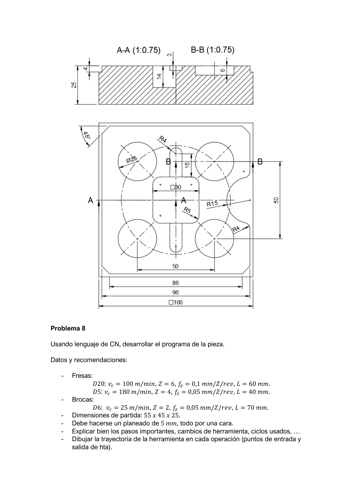
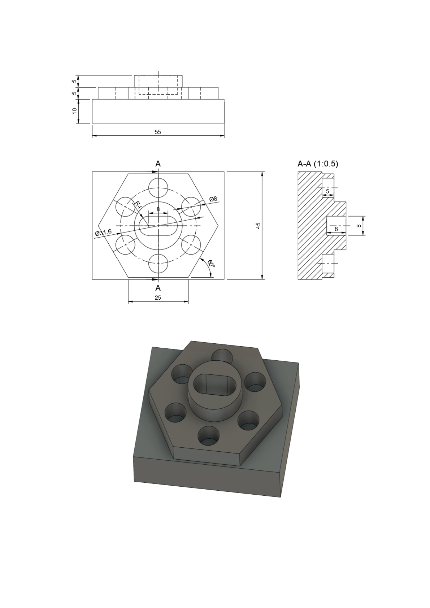
Parámetros de corte
Fresa D20 (planeado/cajeras): N = 100.000/(π×20) = 1.592 rpm; vf = 1592×6×0,1 = 955 mm/min Fresa D5 (ranura oval / hexagono): N = 180.000/(π×5) = 11.459 rpm; vf = 11459×4×0,05 = 2.292 mm/min Broca D6 (4 agujeros): N = 25.000/(π×6) = 1.326 rpm; vf = 1326×0,05 = 66,3 mm/minTécnica: hexágono interior (6 lados rectos con G1) + oval (G1+G2)
; Hexagono regular (6 lados, angulo 60°): ; Vertices: X=R*cos(n*60+30), Y=R*sin(n*60+30) para n=0..5 ; Con G41 (compensacion herramienta izquierda para interior) G41 D_D5 G00 X... Y... G01 Z-Zhexa F100 G01 X... Y... F2292 ; lado 1 G01 X... Y... ; lado 2 ; ... 6 lados G40 G01 X_exit Y_exit ; ; Ranura oval (dos semicirculos + dos rectos): G00 X0. Y-Loval/2 ; inicio ranura G01 Z-Zranura F100 G01 X0. Y-Loval/2 F2292 ; hacia extremo 1 G02 X0. Y+Loval/2 I0. J+Loval ; semicirculo extremo G01 X0. Y-Loval/2 ; vuelta G02 X0. Y-Loval/2 I0. J-Loval ; semicirculo otro extremo ; ; 4 agujeros en PCD Ø31.6 cada 60° (segun plano): G81 X15.8 Y0. Z-Prof R2 F66.3 ; 0° X7.9 Y13.7 ; 60° ; etc. G80Fresado — pieza esquinas redondeadas R10 (66×66×25)
Tarea: Usando lenguaje de CN, desarrollar el programa CNC de la pieza descrita.
Pieza: Base cuadrada 66×66 con esquinas R10, cajera rectangular interior R4 y 4 agujeros Ø4 en semicaírculos. Planeado de 5 mm. Dimensiones de partida: 66 × 66 × 25 mm.
Herramientas:
- Fresa D25: vc=150 m/min; Z=6; fz=0,2 mm/Z/rev; L=60 mm
- Fresa D6: vc=180 m/min; Z=4; fz=0,15 mm/Z/rev; L=30 mm
- Broca D4: vc=25 m/min; Z=2; fz=0,1 mm/rev; L=40 mm
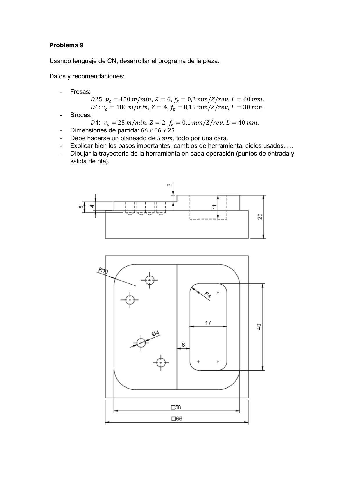
Parámetros de corte
Fresa D25 (planeado/contorno ext): N = 150.000/(π×25) = 1.909 rpm; vf = 1909×6×0,2 = 2.292 mm/min Fresa D6 (esquinas R10): N = 180.000/(π×6) = 9.549 rpm; vf = 9549×4×0,15 = 5.729 mm/min Broca D4 (4 agujeros Ø4): N = 25.000/(π×4) = 1.989 rpm; vf = 1989×0,1 = 199 mm/minTécnica: contorno cuadrado con esquinas R10 (G2/G3 en cada esquina)
; Pieza 66x66 con esquinas redondeadas R10 ; Contorno exterior (partiendo de punto medio de un lado): G41 D_D25 G00 X33. Y0. ; punto entrada (medio lado inferior) G01 Z-Zperfil F100 G01 X23. Y0. F2292 ; recto hasta R10 G02 X33. Y-10. R10. ; esquina inferior-derecha CW G01 X33. Y-10. ; (continuar 4 lados con R10 en cada esquina) ; ; Cajera interior R4: rect 40x40 (aprox segun plano) con R4 ; Agujeros Ø4 a mitad de cada lado (en los semicirculos): ; X=33*cos(ang), Y=33*sin(ang) segun planoFresado — cajera anidada compleja (100×100×25)
Tarea: Usando lenguaje de CN, desarrollar el programa CNC de la pieza descrita.
Pieza: Cajera exterior grande R10 + cajera interior R15/R10/R12 anidada + agujeros Ø5 y Ø8 de distintas profundidades. Planeado de 5 mm. Dimensiones de partida: 100 × 100 × 25 mm.
Herramientas:
- Fresa D40: vc=150 m/min; Z=6; fz=0,2 mm/Z/rev; L=60 mm
- Fresa D16: vc=200 m/min; Z=3; fz=0,1 mm/Z/rev; L=40 mm
- Fresa D4: vc=200 m/min; Z=2; fz=0,1 mm/Z/rev; L=15 mm
- Broca D5: vc=25 m/min; Z=2; fz=0,1 mm/rev; L=60 mm
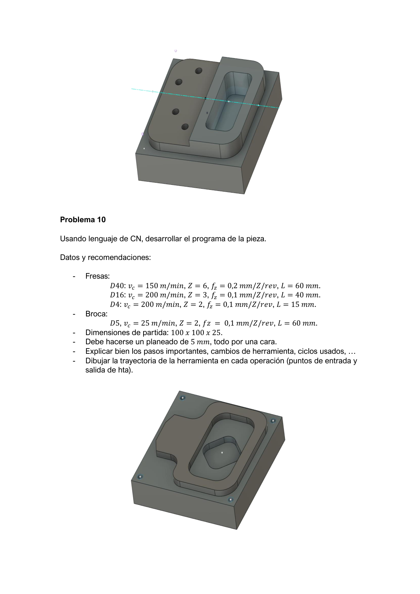
Parámetros de corte
D40 (planeado): N = 150.000/(π×40) = 1.194 rpm → vf = 1194×6×0,2 = 1.433 mm/min D16 (cajeras): N = 200.000/(π×16) = 3.979 rpm → vf = 3979×3×0,1 = 1.194 mm/min D4 (cajera int):N = 200.000/(π×4) ≈ 15.000 rpm (límite máquina) → vf = 15000×2×0,1 = 3.000 mm/min D5 (taladros): N = 25.000/(π×5) = 1.592 rpm → vf = 1592×0,1 = 159 mm/minSecuencia: planeado → cajera ext R10 → cajera interior anidada → taladrado Ø5
O0010 ; ── T1: PLANEADO 5 mm (D40) ────────────────────────────── T1 M6 G90 G54 G17 G21 G94 S1194 M3 M8 G43 H1 G00 Z20. G00 X-70. Y0. G01 Z-5. F100 G01 X70. F1433 ; pasada 1 G00 Y-25. X-70. G01 X70. ; pasada 2 G00 Y25. X-70. G01 X70. ; pasada 3 G00 Z20. ; ── T2: CAJERA EXTERIOR R10 (D16, bajada por rampa) ────── T2 M6 S3979 M3 G43 H2 G00 Z20. G00 X40. Y0. G01 Z-20. F100 ; bajada fuera del contorno G41 D2 G00 X40. Y-30. ; activar compensación G02 X30. Y-40. R10. F1194 ; esquina inf-der G01 X-30. Y-40. G02 X-40. Y-30. R10. G01 X-40. Y30. G02 X-30. Y40. R10. G01 X30. Y40. G02 X40. Y30. R10. G01 X40. Y-30. ; cierre G40 G00 Z20. ; ── T3: CAJERA INTERIOR ANIDADA (D4) ───────────────────── ; (perfil R15/R10/R12 según cota del plano — ejemplo representativo) T3 M6 S15000 M3 G43 H3 G00 Z20. G00 X0. Y0. G01 Z-10. F80 ; primera profundidad G41 D3 G00 X0. Y15. ; punto en radio interno R15 G02 I0. J-15. F3000 ; círculo R15 (nivel superior cajera) G00 Z-18. G41 D3 G00 X0. Y10. G02 I0. J-10. ; círculo R10 (nivel intermedio) G40 G00 Z20. ; ── T4: TALADRADO Ø5 (BROCA D5) ────────────────────────── T4 M6 S1592 M3 G43 H4 G00 Z20. G81 R2. Z-Prof1. F159 ; ciclo fijo — Z-Prof según plano X-30. Y30. ; posición 1 X30. Y30. ; posición 2 X30. Y-30. ; posición 3 X-30. Y-30. ; posición 4 G80 G00 Z50. M5 M9 M30Nota: las cotas exactas de la cajera anidada (radios R15/R10/R12 y profundidades) y posiciones de los agujeros Ø5/Ø8 se extraen directamente del plano de la pieza.
Fresado — cajera cuadrada R8 + patrón agujeros (86×86×35)
Tarea: Usando lenguaje de CN, desarrollar el programa CNC de la pieza descrita.
Pieza: Cajera cuadrada 74×74 con R8 + 8 agujeros Ø4 en PCD Ø50 + agujero central D16 + alvéolo central R25 a cota Z-30. Planeado de 5 mm. Dimensiones de partida: 86 × 86 × 35 mm.
Herramientas:
- Fresa D25: vc=125 m/min; Z=6; fz=0,2 mm/Z/rev; L=60 mm
- Fresa D12: vc=160 m/min; Z=2; fz=0,15 mm/Z/rev; L=40 mm
- Broca D4: vc=25 m/min; Z=2; f=0,1 mm/rev; L=40 mm
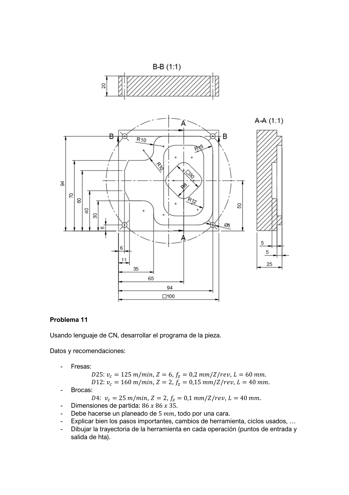
Parámetros de corte
D25 (planeado/contorno): N = 125.000/(π×25) = 1.592 rpm → vf = 1592×6×0,2 = 1.910 mm/min D12 (cajera + alveolo): N = 160.000/(π×12) = 4.244 rpm → vf = 4244×2×0,15 = 1.273 mm/min D4 (8 agujeros PCD): N = 25.000/(π×4) = 1.989 rpm → vf = 1989×0,1 = 199 mm/minPCD Ø50 (R=25): 8 agujeros a 45° → posiciones (R·cosθ, R·sinθ)
0°: X25,0 Y0 45°: X17,68 Y17,68 90°: X0 Y25 135°: X-17,68 Y17,68 180°: X-25 Y0 225°: X-17,68 Y-17,68 270°: X0 Y-25 315°: X17,68 Y-17,68Secuencia: planeado → cajera cuadrada R8 → taladrado PCD → alveolo R25
O0011 ; ── T1: PLANEADO 5 mm (D25) ────────────────────────────── T1 M6 G90 G54 G17 G21 G94 S1592 M3 M8 G43 H1 G00 Z20. G00 X-55. Y-15. G01 Z-5. F100 G01 X55. F1910 G00 Y15. X-55. G01 X55. G00 Z20. ; ── T2: CAJERA CUADRADA 74×74 CON R8 (D12) ─────────────── ; Contorno de cajera con G41 (herramienta a la izquierda del avance) T2 M6 S4244 M3 G43 H2 G00 Z20. G00 X40. Y-29. ; arranque fuera del perfil G01 Z-30. F100 G41 D2 G00 X37. Y-29. G01 X37. Y29. F1273 ; lado derecho ↑ G02 X29. Y37. R8. ; esquina sup-der G01 X-29. Y37. ; lado superior ← G02 X-37. Y29. R8. ; esquina sup-izq G01 X-37. Y-29. ; lado izquierdo ↓ G02 X-29. Y-37. R8. ; esquina inf-izq G01 X29. Y-37. ; lado inferior → G02 X37. Y-29. R8. ; esquina inf-der G40 G00 Z20. ; ── T3: TALADRADO PCD Ø50 + CENTRO D16 (BROCA D4) ──────── ; Nota: agujero central D16 se pre-taladra con D4 como piloto T3 M6 S1989 M3 G43 H3 G00 Z20. G81 R2. Z-38. F199 X0. Y0. ; agujero central (piloto D4) X25. Y0. ; PCD 0° X17.68 Y17.68 ; PCD 45° X0. Y25. ; PCD 90° X-17.68 Y17.68 ; PCD 135° X-25. Y0. ; PCD 180° X-17.68 Y-17.68 ; PCD 225° X0. Y-25. ; PCD 270° X17.68 Y-17.68 ; PCD 315° G80 G00 Z20. ; ── T4: ALVEOLO CENTRAL R25 Z-30 (D12) ─────────────────── ; Entramos por el agujero piloto central y fresamos la circular T4 M6 S4244 M3 G43 H4 G00 Z20. G00 X0. Y0. G01 Z-30. F100 ; bajar por piloto G41 D4 G00 X12. Y0. ; salir a radio intermedio (desbaste) G03 I-12. J0. F1273 ; círculo R12 G00 X22. Y0. ; avanzar al radio final G03 I-22. J0. ; círculo R22 (aproximación a R25) G40 G00 Z20. G00 Z50. M5 M9 M30Nota: el alveolo final R25 requiere un pase de acabado con G41 al radio exacto según cota del plano. El agujero central D16 se puede terminar con fresa o con broca específica D16.
Fresado — disco cilíndrico D80 con contorneado tangencial
Tarea: Usando lenguaje de CN, desarrollar el programa CNC de la pieza descrita.
Pieza: Disco D80 con contorneado circular D70, agujero central + 4 agujeros en PCD. Entrar de forma tangencial al contorno circular D70 (usando G37/G38 o bien G2/G3). Planeado de 5 mm. Dimensiones de partida: tocho cilíndrico D80 × 30 mm.
Herramientas:
- Fresa D30: vc=200 m/min; Z=6; fz=0,2 mm/Z/rev
- Fresa D16: vc=200 m/min; Z=4; fz=0,2 mm/Z/rev
- Fresa D8: vc=200 m/min; Z=2; fz=0,1 mm/Z/rev
- Broca D8: vc=30 m/min; Z=2; f=0,1 mm/rev
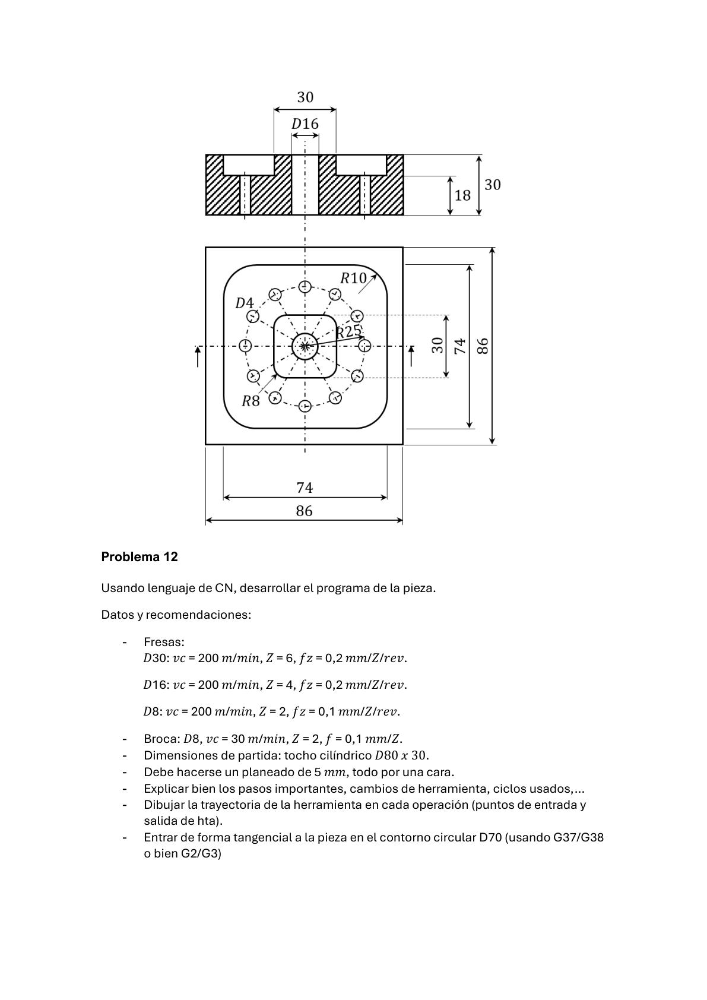
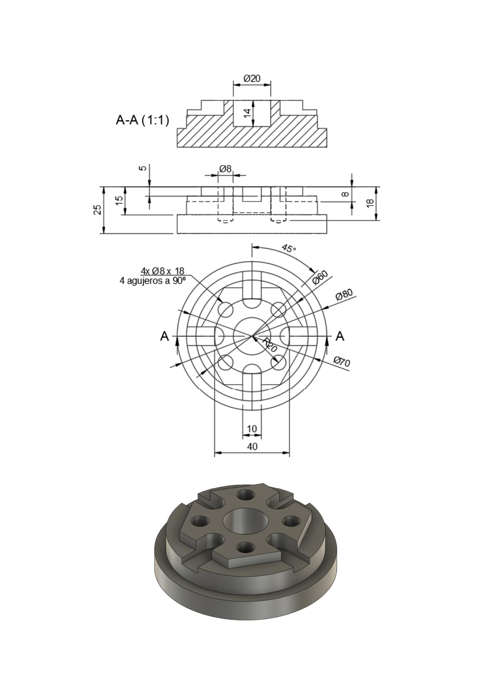
Parámetros de corte
D30 (planeado): N = 200.000/(π×30) = 2.122 rpm → vf = 2122×6×0,2 = 2.546 mm/min D16 (contorno D70):N = 200.000/(π×16) = 3.979 rpm → vf = 3979×4×0,2 = 3.183 mm/min D8 (fresado fino): N = 200.000/(π×8) = 7.958 rpm → vf = 7958×2×0,1 = 1.592 mm/min D8 (taladros): N = 30.000/(π×8) = 1.194 rpm → vf = 1194×0,1 = 119 mm/min★ Técnica clave: entrada tangencial al contorno circular D70
Para contornear un círculo sin marca de entrada: acercarse con arco G03 (radio r_e) cuyo centro esté en la prolongación del radio en el punto de tangencia, a distancia R+r_e del centro de la pieza.
Contorno D70 → R_pieza = 35 mm (programado con G41, fresa D16, R_fresa = 8 mm) Punto de tangencia T = (0, 35) [vértice superior del círculo] Centro arco de entrada C_e = (0, 35 + r_e) = (0, 45) [con r_e = 10 mm elegido] Punto de arranque A = (10, 45) [a 10 mm de C_e en +X] Arco entrada: G03 de A(10,45) a T(0,35) → I = 0-10 = -10; J = 45-45 = 0 Arco contorno: G02 I0 J-35 (círculo CW completo desde T) Arco salida: G03 de T(0,35) a (-10,45) → I = 0-0 = 0; J = 45-35 = +10 O0012 ; ── T1: PLANEADO 5 mm (D30) ────────────────────────────── T1 M6 G90 G54 G17 G21 G94 S2122 M3 M8 G43 H1 G00 Z20. G00 X-55. Y0. G01 Z-5. F100 G01 X55. F2546 G00 Y-25. X-55. G01 X55. G00 Z20. ; ── T2: CONTORNO CIRCULAR D70 — ENTRADA TANGENCIAL (D16) ─ T2 M6 S3979 M3 G43 H2 G00 Z20. G41 D2 G00 X10. Y45. ; activar G41, posicionar en punto A G00 Z2. G01 Z-25. F100 ; bajada a cota de contorno G03 X0. Y35. I-10. J0. F3183 ; ① ARCO ENTRADA (CCW tangente) G02 I0. J-35. ; ② CONTORNO COMPLETO CW (círculo D70) G03 X-10. Y45. I0. J10. ; ③ ARCO SALIDA tangencial G40 G00 X0. Y70. ; cancelar G41 G00 Z20. ; ── T3: TALADRADO CENTRAL + PCD (BROCA D8) ──────────────── T3 M6 S1194 M3 G43 H3 G00 Z20. ; Agujero central G81 X0. Y0. Z-33. R2. F119 ; 4 agujeros PCD Ø50 (R=25) en cruz X25. Y0. X0. Y25. X-25. Y0. X0. Y-25. G80 G00 Z50. M5 M9 M30El círculo completo G02 I0 J-35 recorre el contorno desde T=(0,35) hasta volver a T. La transición G03→G02 y G02→G03 es C1 continua (tangente compartida): no hay marca de entrada en la pieza.
Fresado — pieza con patrón pétalos 80×80×30 (entrada tangencial)
Tarea: Usando lenguaje de CN, desarrollar el programa CNC de la pieza descrita.
Pieza: Base cuadrada 80×80 con esquinas R5, patrón en cruz de 4 “pétalos” R10, agujero central Ø10, 4 agujeros Ø13 y cajera cuadrada central. Entrar de forma tangencial en todas las operaciones de contorneado. Planeado de 7 mm. Dimensiones de partida: 80 × 80 × 30 mm.
Herramientas:
- Fresa D18: vc=200 m/min; Z=6; fz=0,2 mm/Z/rev
- Fresa D6: vc=200 m/min; Z=4; fz=0,2 mm/Z/rev
- Broca D13: vc=30 m/min; Z=2; f=0,1 mm/rev
- Broca D5: vc=35 m/min; Z=2; f=0,1 mm/rev
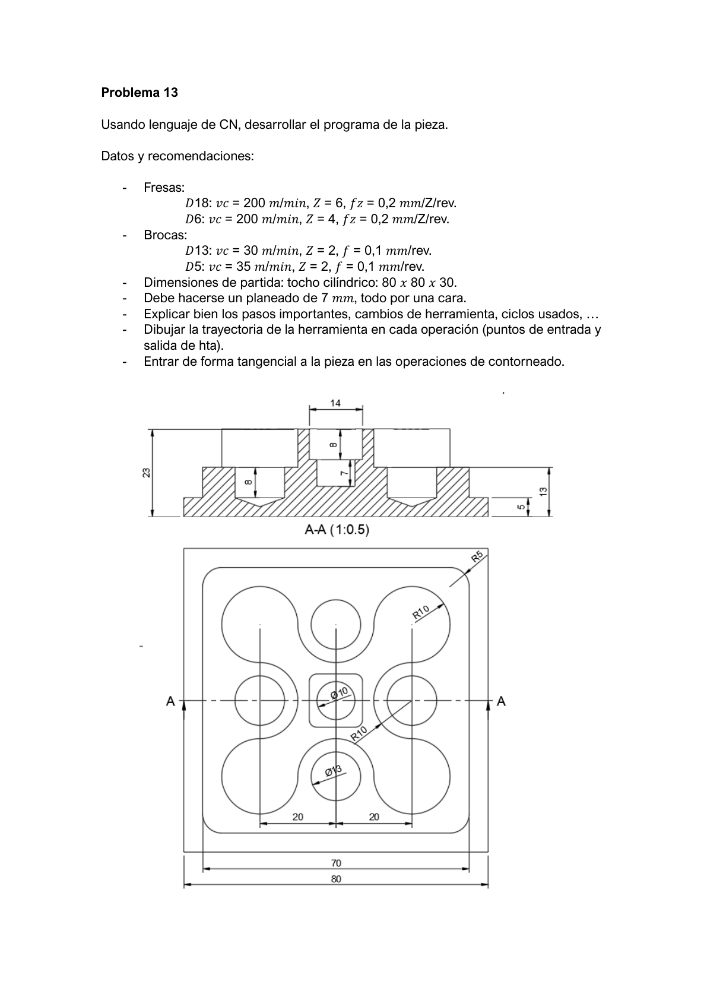
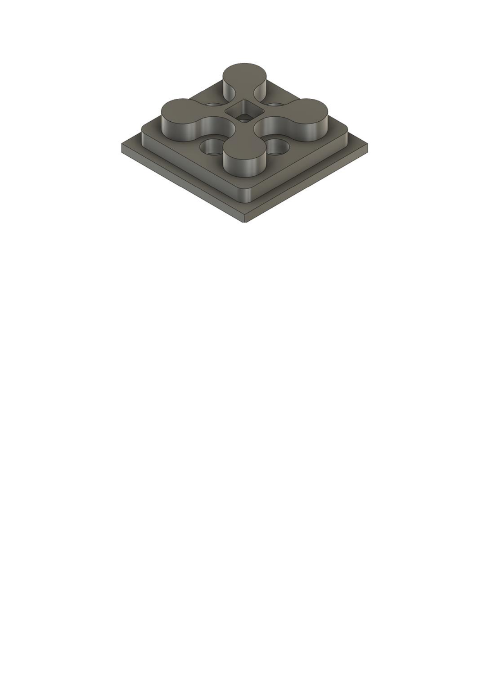
Parámetros de corte
D18 (planeado/contorno):N = 200.000/(π×18) = 3.537 rpm → vf = 3537×6×0,2 = 4.244 mm/min D6 (pétalos R10): N = 200.000/(π×6) = 10.610 rpm → vf = 10610×4×0,2 = 8.488 mm/min D13 (4 agujeros Ø13): N = 30.000/(π×13) = 735 rpm → vf = 735×0,1 = 73 mm/min D5 (agujero central Ø5):N = 35.000/(π×5) = 2.228 rpm → vf = 2228×0,1 = 223 mm/min★ Técnica clave: entrada tangencial a cada pétalo circular R10
Cada pétalo es un círculo de R=10 centrado en uno de los 4 lados del cuadrado. La regla de entrada tangencial es: C_entrada = centro_pétalo + (R_pétalo + r_entrada) × dirección_radial. Con r_entrada = 5 mm:
Pétalo +Y: centro (0,25) → C_e=(0,40) A=(5,40) G03 a (0,35) con I=-5,J=0 luego G02 I0,J=-10 Pétalo +X: centro (25,0) → C_e=(40,0) A=(40,5) G03 a (35,0) con I=0,J=-5 luego G02 I=-10,J=0 Pétalo -Y: centro (0,-25) → C_e=(0,-40) A=(-5,-40) G03 a (0,-35) con I=5,J=0 luego G02 I0,J=10 Pétalo -X: centro (-25,0) → C_e=(-40,0) A=(-40,-5) G03 a (-35,0) con I=0,J=5 luego G02 I=10,J=0 O0013 ; ── T1: PLANEADO 7 mm (D18) ────────────────────────────── T1 M6 G90 G54 G17 G21 G94 S3537 M3 M8 G43 H1 G00 Z20. G00 X-50. Y-20. G01 Z-7. F100 G01 X50. F4244 G00 Y0. X-50. G01 X50. G00 Y20. X-50. G01 X50. G00 Z20. ; ── T2: PÉTALOS R10 — ENTRADA TANGENCIAL (D6) ──────────── T2 M6 S10610 M3 G43 H2 G00 Z20. ; Pétalo +Y (centro X0 Y25) G00 X20. Y40. G01 Z-20. F100 G01 X5. Y40. F8488 ; acercamiento al punto A G03 X0. Y35. I-5. J0. ; ① arco entrada CCW (tangente) G02 I0. J-10. ; ② pétalo completo CW (R=10, centro en Y25) G03 X-5. Y40. I0. J5. ; ③ arco salida G01 X-20. Y40. G00 Z5. ; Pétalo +X (centro X25 Y0) G00 X40. Y20. G01 Z-20. F100 G01 X40. Y5. F8488 G03 X35. Y0. I0. J-5. G02 I-10. J0. G03 X40. Y-5. I5. J0. G01 X40. Y-20. G00 Z5. ; Pétalo -Y (centro X0 Y-25) G00 X-20. Y-40. G01 Z-20. F100 G01 X-5. Y-40. F8488 G03 X0. Y-35. I5. J0. G02 I0. J10. G03 X5. Y-40. I0. J-5. G01 X20. Y-40. G00 Z5. ; Pétalo -X (centro X-25 Y0) G00 X-40. Y-20. G01 Z-20. F100 G01 X-40. Y-5. F8488 G03 X-35. Y0. I0. J5. G02 I10. J0. G03 X-40. Y5. I-5. J0. G01 X-40. Y20. G00 Z20. ; ── T3: CAJERA CENTRAL CUADRADA (D6) ───────────────────── G00 X0. Y0. G01 Z-15. F100 G41 D2 G00 X0. Y-12. ; (dimensión según plano) G01 X12. Y-12. F8488 G01 X12. Y12. G01 X-12. Y12. G01 X-12. Y-12. G01 X0. Y-12. G40 G00 Z20. ; ── T4: TALADRADO (BROCA D13 + D5) ─────────────────────── T3 M6 S735 M3 G43 H3 G00 Z20. G81 R2. Z-33. F73 X20. Y0. ; PCD 4 agujeros Ø13 (posición según plano) X0. Y20. X-20. Y0. X0. Y-20. G80 T4 M6 S2228 M3 G43 H4 G00 Z20. G81 R2. Z-33. F223 X0. Y0. ; agujero central Ø5 G80 G00 Z50. M5 M9 M30La entrada tangencial garantiza transición C1 (sin discontinuidad de dirección) al inicio de cada pétalo. El patrón se aplica igual a los 4 pétalos rotando 90° los parámetros de entrada.